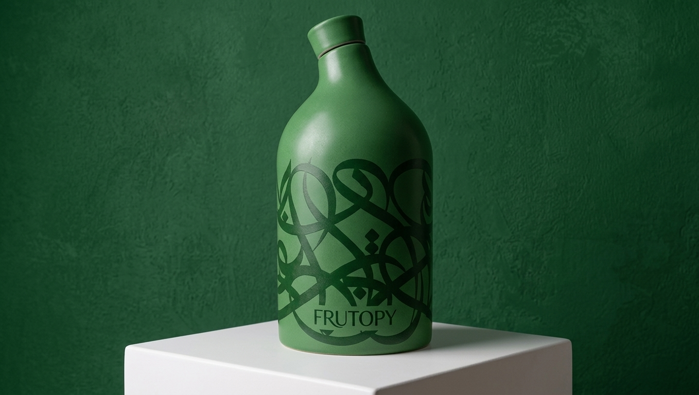
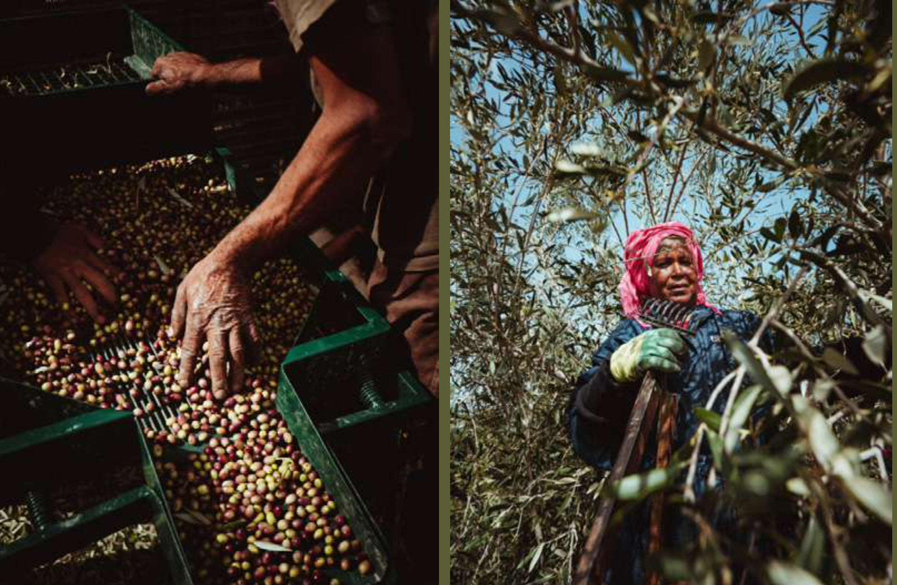

01
L'OLIVIER
Planter un olivier à Gabès.
Accessible, idéal pour offrir.
Vidéo personnalisée à la clé.
Prix : À définir ensemble
FRUTOPY × TACAPAE
Un projet où l'arbre, l'huile et l'art racontent la même histoire.
02 · LA VISION
Frutopy transforme un cadeau en arbre planté, suivi et filmé.
Tacapae transforme l'huile d'olive de Gabès en objet d'art collectionnable.
Notre idée : les réunir autour d'un même geste.
Un olivier planté à Gabès, une bouteille signée qui en porte la mémoire.
Un geste concret, offert à quelqu'un.
Des arbres pour longtemps, dans un vrai lieu.
Un objet d'art que l'on garde et que l'on partage.
03 · DEUX UNIVERS, UNE MÊME RACINE
FRUTOPY
0
arbres plantés
0
familles nourries
0/ 5
sur Trustpilot
Un arbre choisi, planté par une équipe locale, entretenu six jours sur sept, et une vidéo personnalisée envoyée sous 9 jours par WhatsApp.
TACAPAE
Récolte à la main sur les terres familiales de Temoula, pressage à froid en quelques heures, et des bouteilles en grès réinventées à chaque édition par un artiste de renom.
04 · LA COLLABORATION
Chaque client Frutopy peut faire planter un olivier sur les terres de Tacapae, dans la région de Gabès.
Un arbre nommé, localisé, filmé, comme pour tous les arbres Frutopy.
Une édition d'huile d'olive dans une bouteille dédiée.
Les couleurs de Frutopy. La touche artistique d'eL Seed. Un objet à offrir, à garder, à collectionner.
Le même geste, raconté deux fois : une fois dans la terre, une fois dans la matière.

05 · VOLET 01 — L'OLIVIER
Le parcours client Frutopy, transposé aux oliviers de Tacapae.

01
Le client choisit son olivier, pour lui ou pour un proche.
02
L'arbre est planté à Gabès, sur la terre de Tacapae, par l'équipe locale.
03
Une vidéo personnalisée : nom de l'arbre, lieu, pancarte unique.
04
L'olivier grandit et l'huile de Gabès rayonne dans le monde.
06 · VOLET 02 — LA BOUTEILLE
01
Grès céramique façonné à la main, comme toutes les bouteilles Tacapae.
02
Une palette Frutopy : vert végétal, tons chauds, touches dorées.
03
Sa calligraphie et son regard sur Gabès donnent l'âme de l'objet.
04
Série limitée, numérotée, pensée comme un objet de collection.
Illustration indicative. Le design final revient à l'artiste.
07 · LES OFFRES POSSIBLES
01
Planter un olivier à Gabès.
Accessible, idéal pour offrir.
Vidéo personnalisée à la clé.
Prix : À définir ensemble
02
L'édition limitée Frutopy × Tacapae.
L'objet de collection, signé, numéroté, prêt à offrir.
Prix : À définir ensemble
PROPOSITION PHARE
03
Un olivier planté + une bouteille.
Le cadeau complet :
l'arbre qui grandit, l'huile qui se déguste.
Prix : À définir ensemble
08 · COMPLÉMENTARITÉ
09 · POURQUOI CE PROJET EST JUSTE
01
Planter un arbre, c'est le cœur de Frutopy. Cultiver l'olivier, c'est l'origine de Tacapae.
02
Gabès, son oasis maritime, ses oliviers centenaires : une histoire réelle, pas un décor.
03
Une bouteille en grès se garde, se montre, se transmet. Comme un arbre.
04
Des personnes sensibles à l'impact, à l'art et aux cadeaux qui ont du sens.
10 · FEUILLE DE ROUTE
ÉTAPE 1
Valider la vision, les rôles et le cadre de collaboration entre Frutopy, Tacapae et eL Seed.
ÉTAPE 2
Brief artistique, palette Frutopy, prototypes de la bouteille avec l'atelier céramique.
ÉTAPE 3
Plantation des oliviers à Gabès, tournage des images, préparation de la première série.
ÉTAPE 4
Ouverture des précommandes, contenus, vidéos, campagne auprès des communautés.
Le calendrier précis sera fixé avec Tacapae.
La saison de récolte, à l'automne, est un moment naturel pour créer et filmer.
11 · ET MAINTENANT ?
Ce qu'il nous reste à construire ensemble.
Le lieu et le modèle de plantation des oliviers à Gabès
Le format de la bouteille : quantités, numérotation, prix
La liberté créative d'eL Seed et le brief de couleurs Frutopy
La répartition économique et les droits sur le design
Le calendrier et le suivi d'impact dans le temps
Planter, créer, transmettre.
FRUTOPY × TACAPAE